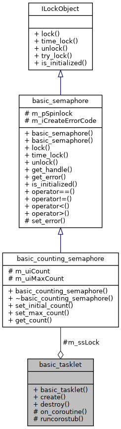
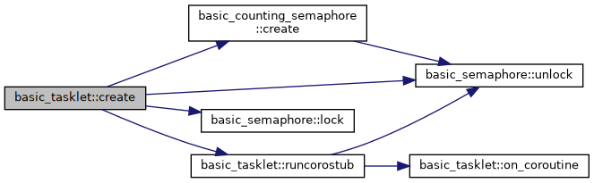
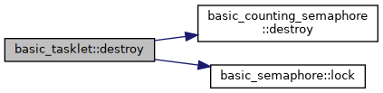

Public Member Functions |
Protected Member Functions |
Static Protected Member Functions |
Protected Attributes |
List of all members
basic_tasklet Class Referenceabstract
#include <mn_tasklet.hpp>
Collaboration diagram for basic_tasklet:

Public Member Functions | |
| virtual int | create (uint32_t parameter, unsigned int timeout=MN_THREAD_CONFIG_TIMEOUT_COROUTINE_DEFAULT) |
| virtual int | destroy () |
Protected Member Functions | |
| virtual bool | on_coroutine (uint32_t arg)=0 |
Static Protected Member Functions | |
| static void | runcorostub (void *parm, uint32_t parameter) |
Protected Attributes | |
| counting_semaphore_t | m_ssLock |
Detailed Description
A FreeRTOS wrapper for its concept of a Pended Function. In Linux, one permutation of this would be a Tasklet, or bottom half processing from an ISR.
This is an abstract base class. To use this, you need to subclass it. All of your coroutines should be derived from the basic_tasklet class. Then implement the virtual on_coroutine function.
Member Function Documentation
◆ create()
|
virtual |
Create and schedule this Tasklet to run.
- Parameters
-
parameter Value passed to your on_tasklet method. CmdTimeout How long to wait to send this command to the timer daemon.
- Returns
- ERR_COROUTINE_OK This command will be sent to the timer daemon, ERR_COROUTINE_CANTSTART It will not (i.e. timeout) and ERR_COROUTINE_CANTINITLOCKT The Locking Object can't create - tasklet not run
Here is the call graph for this function:

◆ destroy()
|
virtual |
Destroy the Tasklet
- Returns
- ERR_COROUTINE_OK Destroyed without any errors
Here is the call graph for this function:

◆ on_coroutine()
|
protectedpure virtual |
Implementation of your actual tasklet code. You must override this function.
- Parameters
-
parameter Value passed to you from the create() methods.
- Returns
- false to end the coroutine and true when run
Here is the caller graph for this function:
◆ runcorostub()
|
staticprotected |
Adapter function that allows you to write a class specific on_tasklet() function that interfaces with FreeRTOS.
Here is the call graph for this function:
Here is the caller graph for this function:
Member Data Documentation
◆ m_ssLock
|
protected |
Protect against accidental deletion before we were executed.
The documentation for this class was generated from the following files: